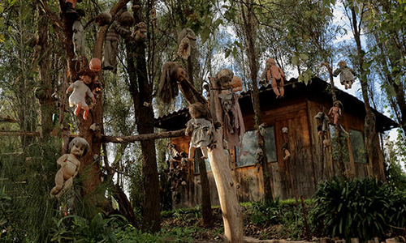
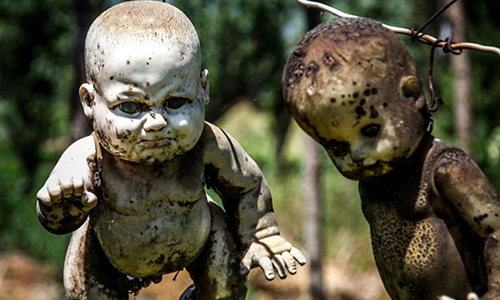
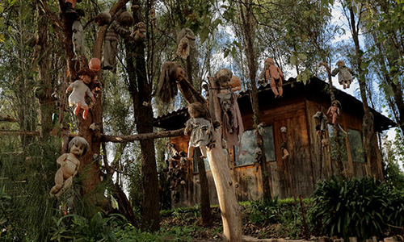
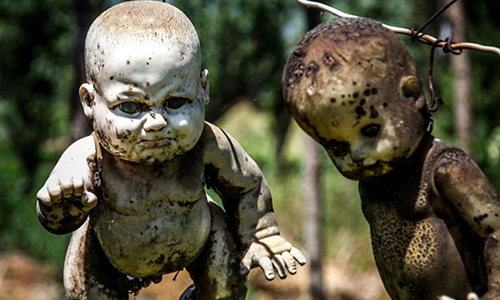
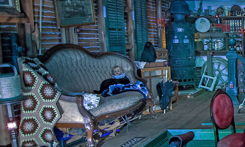
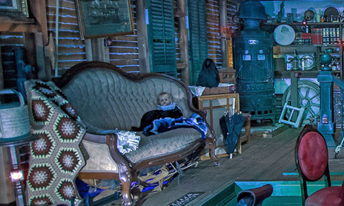

Vacation Suggestor
Let us help you find your dream vacation! Just answer a few simple questions, and we'll tell you the perfect destination for your next adventure!
, grab your swimsuit and head to the Bermuda Triangle!
A perfect romantic vacation for an adventurous couple, your days will be filled with sunshine and sandy beaches. Spend your time drinking Mai Tais while listening to the sound of the crashing surf. Work on your tan while lounging for months in liferafts. Go snorkling for shipwrecks and dead bodies. Maybe you'll be lucky enough to add a new wreck (or body) to the bottom of the ocean! Planes work too - the sharks aren't fussy!


, it's time to play Isla de las Muñecas!
A whimsical vacation that's great for families, Isla de las Muñecas is also known as the Island of Dolls. Just south of Mexico City, the island is easily accessed by boat. Just don't fall in the water! Isla de las Muñecas started when the caretaker found a drowned little girl. Shortly thereafter, he saw a floating doll near the canals. Most probably, the doll belonged to the girl. He placed it in the trees to pay homage to the girl's lost soul. Sonn more and more dolls joined the collection until the island became what it is today. An exciting trip filled with history, lots of spirited playtime, and beautiful haunted waters.
 



, time to slither to the Ilha da Queimada Grande!
This trip is perfect for all animal lovers! Ilha da Queimada Grande is located just off the coast of Brazil, and boasts one the highest densities of snakes anywhere in the world! Known for being the home of the Golden Lancehead a critically endangered pit viper. Spend your days hiking through forests, while fanged serpents rain down from above. No worries about missing out here! With an average of one snake per square meter, you will probably even get to cuddle with them at night!
, it;s time to get lost at the Winchester Mystery House!
Want to get away, but don't want to deal with the hassle of international travel? The Winchester Mystery house is the place for you! Full of puzzles to entertain kids. Just make sure they don't get lost or trapped! Just outside of San Fransisco, you can spend time wandering the hallways searching for ghosts, and learning about the cursed histort of the orignal owners. Watch out for the occasional flickering light, and collapsed wall!
 


, pack your bags for Capela dos Ossos!
Spend time learning about the history of this ancient chapel. Made from the bones of over 5000 corpses, including two that hang from the ceiling. The Capela dos Ossos is located in Portugal and translates to the Chapel of Bones. Spend days and evenings contemplating your fate, and the futility of human existence. “We bones, are here, waiting for yours.”